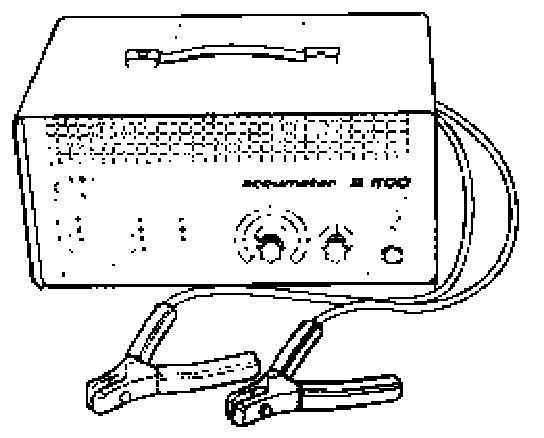
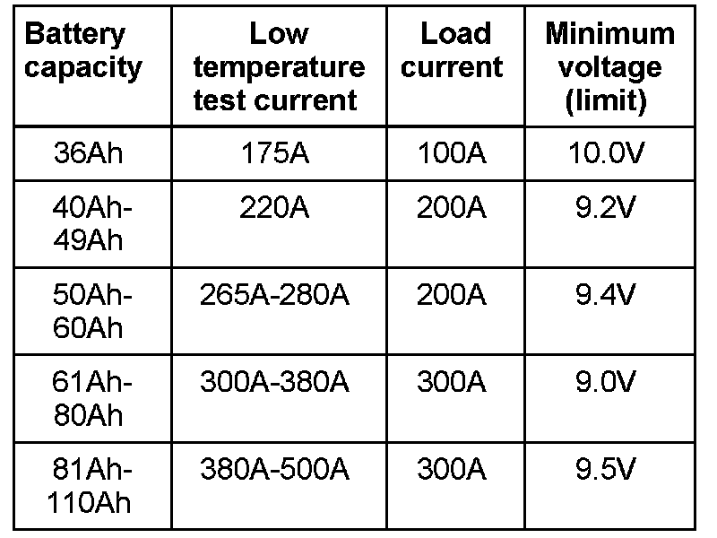

Load Testing
Load test
The electrolyte specific gravity test in conjunction with the battery load test provides specific information of the battery condition.
Special tools and equipment
- Battery tester VAS 1979, VAS 5033, Christie Automotive BT-9000 or equivalent.
Note:
It is not necessary to remove the battery when using battery test unit VA81979 or VA 85033. The battery does not need to be disconnected.
Performing battery load test

- Switch ignition off.
- Read battery tester operating instructions.
- Connect tester cable clamps to battery terminals as described in tester operating instructions.
The clamps must make good contact with the battery terminals.
The load current to be applied varies according to battery capacity See battery tester operating instructions or refer to the table below.
- Perform battery load test as per battery tester operating instructions and compare test result with table.
A minimum voltage is the result of the load test according to battery capacity.
Table

- If minimum voltage is not reached, replace battery.
Explanation of battery load check: Because of the high load on the battery during this test (high current flow) the battery voltage lowers. If the battery is OK, the voltage value only lowers to the minimum voltage.
If the battery is defective, or has a low charge, the battery voltage quickly drops below the minimum voltage.
This low voltage value remains over a long period and the voltage only increases again slowly after a successful test.